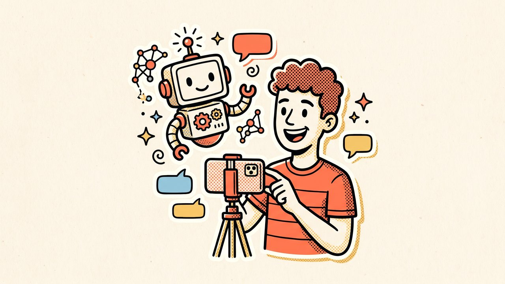

How to Run a Blog with AI: A Step-by-Step Guide

Running a blog is hard not because of filming or editing, but because of two things: a lack of ideas and a lack of consistency. AI solves both problems. It takes the routine off your hands — coming up with topics, writing scripts, preparing visuals — and leaves you to focus on what matters most: filming and connecting with your audience. In this guide, we'll break down how to run a blog with AI and publish content quickly, without burning out.
Why AI is changing blogging
Just a couple of years ago, content required a team: a scriptwriter, a designer, an editor. Today, one person with AI tools does the same thing in an hour. AI generates ideas for your niche, writes texts in your tone, suggests storyboards and creates images. The barrier to entry has dropped to almost zero — all you need is a phone, access to an AI tool, and the will to do it.
The key benefit isn't speed — it's consistency. When ideas and scripts are prepared automatically, you stop getting stuck at the "I don't know what to film" stage and start posting regularly. And regularity is what every algorithm loves.
Where to start: 3 steps
1. Define your niche and angle
Put it in one sentence: "I help [who] with [what]." This is the foundation the AI builds on when generating ideas.
2. Set up idea generation
Give the AI your niche and your audience's pain points — and get a month's worth of topics. That way, your content plan stops being a headache.
3. Build a pipeline
An idea turns into a script, a script into visuals, visuals into a finished video. Each step is powered by AI, and you assemble the final result.
What blogging tasks AI can handle
AI is useful at almost every stage. Here's what it looks like in practice:
| Task | What AI does | What it saves |
|---|---|---|
| Finding ideas | Generates topics based on your niche and trends | Hours of brainstorming |
| Scripts | Writes text with a hook and structure | Half a day on writing |
| Visuals | Creates slides and images | A designer's work |
| Formatting | Writes captions and hashtags | The publishing routine |
| Analytics | Suggests what to improve | Blind guesswork |
This approach turns a week of work into a single hour.
How to avoid falling into AI-generic content
The main risk of AI-generated content is losing your personal touch. Text becomes smooth but empty, and viewers can feel it.
AI is a tool, not the author. Your voice, your story and your emotion are still up to you.
To keep your content alive, add personal experience, specific examples and your own delivery. AI provides the framework — you bring the character.
Common beginner mistakes
- Copying AI-generated text word for word, without edits or your own tone.
- Chasing perfection and not publishing anything for weeks.
- Changing your blog's topic every week — the algorithm doesn't have time to figure out who to show you to.
- Checking stats every five minutes instead of working on your next video.
- Forgetting the call to action at the end of the video.
Avoid these traps, and growth becomes just a matter of time.
Frequently Asked Questions
Do I need experience to run a blog with AI?
No. AI lowers the barrier to entry: it takes care of ideas, texts and visuals, leaving you to just film and talk.
Which AI tools do I need for a blog?
To get started, access to text and image generation is enough. It's more convenient to use an aggregator where the tools are gathered in one window.
How long does a week's worth of content take?
With a set-up pipeline, about an hour. You prepare ideas, scripts and visuals in batches for several videos at once.
Won't the content look like everyone else's?
It won't, if you add personal experience and your own tone. AI provides the foundation, but you create the uniqueness.
How often should I post?
Consistency matters more than frequency. Posting three to four times a week works steadily better than ten videos at once followed by silence.
not by hand